After studying this section, students should be able to do the following:
It’s no secret that traditional advertising venues no longer provide the punch they used to. Advertising clutter makes it more difficult to get noticed in a crowded media environment, and even if people see or hear your ad, they are so busy multitasking that they may not react to it as you’d like. For this reason many advertisers look to alternative media either to replace or, more likely, to supplement their broadcast efforts. These options can be especially powerful for the client who needs short-term results (buy something now) rather than a longer-term brand building effort.
As the effectiveness of traditional media platforms continues to come under scrutiny, a lot of companies are allocating a greater proportion of their advertising dollars to point-of-purchase advertisingAlso called marketing-at-retail. Can be an elaborate product display or demonstration, a coupon-dispensing machine, or even someone giving out free samples of a new cookie in the grocery aisle. (POP, also called marketing-at-retail). U.S. companies spend more than $13 billion each year in this category. A POP can be an elaborate product display or demonstration, a coupon-dispensing machine, or even someone giving out free samples of a new cookie in the grocery aisle.
Coupons and other short-term sales promotions (e.g., “buy one, get one free”) are forms of POP that are extremely trackable—it’s fairly easy to monitor redemption rates to the nth degree so an advertiser knows exactly which offers resulted in purchases. The eventual impact on the bottom line? Not always so obvious—a rush of purchases in the short-term to take advantage of a big price reduction ironically might decrease the brand’s long-term value if these cuts cheapen its image! And you thought this was going to be easy.…
As we all know, the experiences we have in a retail environment exert a big impact on the likelihood we’ll purchase—though, again, these can be hard to quantify. However, POP industry experts claim that a well-designed in-store display can boost impulse purchases by as much as 10 percent. One study that compared short-term sales increases among a number of different media across three hundred campaigns reported that in-store fixtures yield an average of 160 percent, and in-store posters delivered a 136 percent return.“In-Store Marketing Gives Highest Return,” November 2003, http://www.popai.com/AM/Template.cfm?Section=Search§ion=June&template=/CM/ContentDisplay.cfm&ContentFileID=897 (accessed August 16, 2008).
Due to the high stakes involved, several initiatives are under way to employ high-tech methods that more precisely measure just what happens in the store when consumers encounter advertising messages. The industry trade association POPAI (Point-of-Purchase Advertising Institute) is spearheading a major initiative with the Association of National Advertisers (ANA) to establish measurement standards for the industry.“The Association of National Advertisers and POPAI Lead Global Marketing at-Retail Initiative (MARI),” http://www.popai.com, October 7, 2005 (accessed August 16, 2008).
In addition, an alliance of major marketers including Procter & Gamble, Coca-Cola, 3M, Kellogg, Miller Brewing, and Wal-Mart is using infrared sensors to measure the reach of in-store marketing efforts. Retailers have long counted the number of shoppers who enter and exit their stores, and they use product barcode data to track what shoppers buy. But big consumer-products companies also need to know how many people actually walk by their promotional displays so they can evaluate how effective these are. Although it’s possible to fool these sensors (they still can’t tell if someone is simply cutting through to reach the other end of the store), this sophisticated measurement system is a valuable first step that many advertisers eagerly await.Ellen Byron and Suzanne Vranica, “Scanners Check Out Who’s Browsing Marketers, Retailers Test Sensors to Weigh Reach of In-Store Promotions,” Wall Street Journal, September 27, 2006, B2.
Finally, the marketing research company TNS is about to launch a new system to measure POP in grocery stores. The TNS Insight Dashboard will be a syndicated service that provides a report each quarter on the effectiveness of in-store marketing strategies. The Dashboard monitors where shoppers are in a grocery store at any given time, tracks the number of seconds they spend at any display and the amount of time they spend with other products, and then overlays these results with sales information so TNS can determine which displays actually lead to purchases. As a TNS executive observed, “A display’s stopping power is a good thing when it generates a lot of purchasing, but if people are spending many seconds there and not buying, something isn’t speaking to customers properly.”Quoted in Sarah Mahoney, “TNS Unveils New In-Store Metrics For Grocers,” Marketing Daily, July 14, 2008, http://www.mediapost.com (accessed August 16, 2008).
Surprise—there is no standard metric for traditional billboard advertising. However, common sense suggests that these messages are more useful in some contexts than in others. Because passing motorists only see a billboard for a few seconds, this medium is more effective to convey a quick visual message than substantial information. Billboard messages need to be kept to five or six words at the most. In this case a picture truly is worth a thousand words. Again, it’s awfully hard to quantify the impact a vivid picture can make, though this could be substantial if it’s sufficiently interesting and differentiates the product (especially when people see it repeatedly).
Outdoor advertising is quickly moving to more sophisticated digital technology that people can see at a greater distance and that can present more detailed verbal information. In research conducted by OTX, a global consumer research and consulting firm, 63 percent of adults said that advertising on digital signage “catches their attention.” Respondents consider advertising in this media to be more unique and entertaining and less annoying than both traditional and online media. The study also reports that awareness of digital out-of-home media is high—62 percent of adults have seen digital signage in the past twelve months—and is at levels comparable to billboards, magazines, and newspapers. On average, people notice digital signage in six different kinds of locations during their week, giving advertisers the opportunity to intercept people with their brand message at various touchpoints during their weekly routines as they work, play, and socialize. It’s even more effective at reaching eighteen- to thirty-four-year-olds, who rate this medium higher than the general population.“Report: Digital Signage More Effective than Traditional Media,” October 24, 2007, http://www.digitalsignagetoday.com/article.php?id=18696&prc=407&page=190 (accessed August 16, 2008).
Cinema advertisingForm of out-of-home media used at movie theaters. is one form of out-of-home media that is gaining in popularity—as SS+K discovered when they launched the in-cinema NewsBreaker Live game. An organization called The Out-of-Home Video Advertising Bureau (OVAB) is developing guidelines to allow potential advertisers to measure the effectiveness of this new medium. At this point twenty-five companies belong to this group.“Out-of-Home Video Advertising Bureau (OVAB) Expands Adding Screenvision and Target…,” Reuters, January 14, 2008, http://www.reuters.com/article/pressRelease/idUS108048+14-Jan-2008+PRN20080114 (accessed August 16, 2008).
In order to measure the effectiveness of their innovative in-cinema effort, msnbc.com and SS+K considered all the possibilities to show impact and impressions.
Figure 14.13
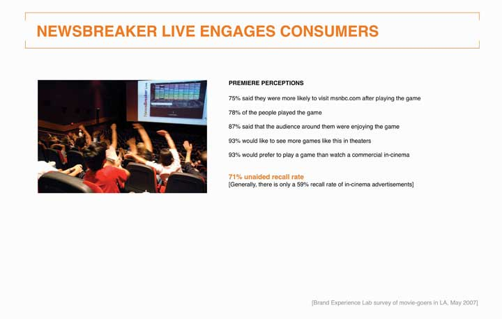Audience members in Los Angeles play at the premiere of NewsBreaker Live, the first ever in-cinema game.
Figure 14.14
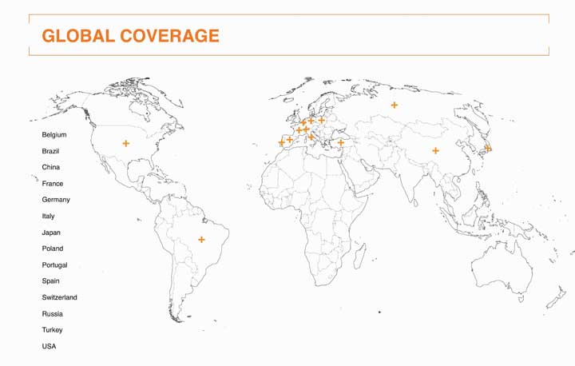The game garnered significant press coverage worldwide. These are the countries where stories about NewsBreaker Live appeared in local media.
NewsBreaker Live yielded incredible results in terms of players’ recall of msnbc.com and enjoyment of the new innovative messaging. The team also aimed to measure impressions by counting tickets sold for the showtimes and films in which NewsBreaker Live played. The game ran in summer blockbusters such as Spider-Man 3, Shrek the Third, Ocean’s 13, and Ratatouille, so a large number of people were exposed to it.
In 2008 advertisers spent $3.6 billion to place their products in TV shows and movies. Until fairly recently, product placement was a casual operation where prop masters made informal arrangements to procure products they needed to dress a set. Today, it’s big business—but the effectiveness of these placements is anyone’s guess.
Nielsen, the company that compiles TV program viewership ratings, is working on a process with another company, IAG, to quantify when products appear in shows. IAG currently produces product placement ratings that are based on viewer recall; it asks 2.5 million people to respond to surveys online after they watch their favorite shows. These ask whether viewers remember the brand, think more positively about it, or want to purchase it, and whether the placement disrupted their viewing experience. Another firm called ITVX uses a system that measures up to sixty variables to determine a placement’s effectiveness, including whether a product appears in the foreground or background, whether a viewer is aware that a brand is on screen, and whether the show’s commercials are coordinated with the product placements.Alana Semuels, “Research Firm Nielsen Tallying Product Placement Ads,” Los Angeles Times, July 21, 2008, http://www.latimes.com (accessed August 16, 2008).
Odds are you’ve watched a clip on YouTube recently. Advertisers want more access to viewers like you as online video advertising comes into its own. Some companies including CBS and Electronic Arts have reversed their positions about prosecuting users who post unauthorized clips of their content and have instead started to sell advertising on these spots. Interestingly, CBS is doing this even though its sister company Viacom is involved in a billion-dollar copyright lawsuit against Google, which owns YouTube.Brian Stelter, “Some Media Companies Choose to Profit from Pirated YouTube Clips,” New York Times Online, August 15, 2008 (accessed August 16, 2008).
Reflecting the newness of this media platform, in 2006 the Interactive Advertising Bureau (IAB) developed a set of guidelines to help the industry determine at what point a piece even qualifies as a video commercial. It defines a video adA commercial that may appear before, during, and after a variety of content including streaming video, animation, gaming, and music video content in a player environment. as a commercial that may appear before, during, and after a variety of content including streaming video, animation, gaming, and music video content in a player environment. For now, the industry still uses CPM as its primary metric. The majority of video ads are repurposed fifteen- and thirty-second television commercials, but as yet there is little data about how these translate to the online environment, which length is most effective, and so on.
Advergames, as you learned in Chapter 10 "Plan and Buy Media: SS+K Chooses the Right Media for the Client’s New Branding Message", are custom-made videogames specifically designed around a product or service, such as Sneak King by Burger King. Many advertisers are intrigued by the possibilities they see here, especially since the elements within an online game can be changed over time. Videogames also can show digital video ads before play, during breaks in a game, or following completion of the game. A client can introduce its products directly into the game in the form of beverages, mobile phones, cars, and so on.
The Interactive Advertising Bureau (IAB) is at work to define standard metrics for this new medium. The videogame platform shares some characteristics of online ads because when people play online, clients can track which specific elements in a game yield a response (e.g., when a player clicks on a sponsored link). The IAB has identified basic metrics that include:
SS+K created msnbc.com’s NewsBreaker game because the agency realized that its target segment of News Explorers also tend to be active in casual online games. The chart below illustrates two types of engagement with the NewsBreaker game: number of times played and how long the user plays.
Figure 14.15
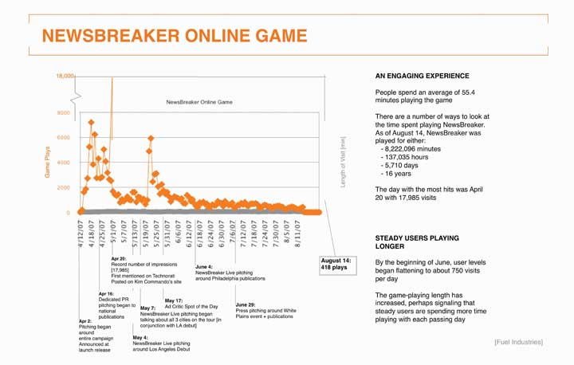Chart tracking number of players and time spent playing NewsBreaker online.
As you can see, users spent an average of 55.4 minutes playing the game. Game enthusiasts have enjoyed playing the game well past the media buy, which ended in June 2007. The total time people spent playing the game from April 12 through the end of August is 8,714,295 minutes—around seventeen years!
The number of people playing peaked on April 20 at a whopping 17,985 people. That was at the beginning of the campaign; toward the end the numbers were closer to 750 per day, indicating that the media efforts attracted News Explorers to the game.
In 2007, marketers—commercial and nonprofit—spent $173.2 billion on direct marketing in the United States. The Direct Marketing Association (DMA) claims that each dollar spent on direct marketing yields, on average, a return on investment of $11.69.The Power of Direct Marketing: ROI, Sales, Expenditures and Employment in the US, 2007-2008 Edition, Direct Marketing Association, http://www.the-dma.org/aboutdma/whatisthedma.shtml (accessed August 15, 2008) The strength of direct marketing is that it allows the advertiser to track the impact of a mailing or online ad directly. As direct marketers like to say, “What gets measured, gets managed.”
E-commerce marketers often use a metric they call the conversion rateThe percentage of visitors to an online store who purchase from it.—the percentage of visitors to an online store who purchase from it. Because each action online is trackable, it’s possible to go even further by breaking down the Web experience to understand which aspects of it are effective and which are not. For example, IBM computes microconversion rates to pinpoint more precisely how companies can improve their online shopping process.Joan Raymond, “No More Shoppus Interruptus,” American Demographics (May 2001): 39. This technique breaks down the shopping experience into the stages that occur from the time a customer visits a site to if or when she actually makes a transaction:
These researchers calculate microconversion rates for each adjacent pair of measures to come up with additional metrics that can pinpoint specific problems in the shopping process:
In some cases advertisers evaluate how much they spend on various ads compared to the visits or clicks they each create and then reallocate their ad spend to the ones with the highest ROI, as measured by cost per visit or cost per click. This method is easy to implement, but it can be misleading because it’s short-term oriented: one execution may result in a low cost per action, but customers may be “one-timers” who don’t return. Another execution might be more expensive, but customers may respond to it repeatedly over time, generating additional profits with no additional costs.“True Campaign ROI Links to LTV (Lifetime Value),” http://www.jimnovo.com/ROILTV.htm (accessed August 15, 2008).
Online advertising formats have historically faced problems with declining response rates over time. Banner ads debuted with click-through rates above 50 percent but faded to about 2 percent after their novelty wore off. Today, banners get fewer than five responses for every thousand advertisements shown, a response rate of about 0.5 percent.“IAB on Advertising ROI,” ZDNet Research, November 14th, 2003, http://blogs.zdnet.com/ITFacts/?p=4928 (accessed August 15, 2008). That’s why advertisers now resort to other methods to capture surfers’ attention, such as pop-up adsAds that open on top of the Web site a person visits. that open on top of the Web site a person visits (also on their way out because they tend to be more annoying than entertaining) and, more lately, pop-under adsAd that opens a new browser window under the active window, allowing the user to continue browsing at the intended site. that open a new browser window under the active window so they allow the user to continue browsing at the intended site.
Numerous Web sites provide online calculators to determine ROI—of course these assume that you have accurate information to use (garbage in, garbage out). They typically consider these inputs:
With this information in hand, you can calculate how much you spend to attract each visitor, how much you spend to attract each visitor who actually buys from you, and your net return on your investment. Blitz Media Design, http://www.webrefinements.com/seo/web-roi.html (accessed August 15, 2008).
Since its core product is delivered online, it was a no-brainer that msnbc.com’s new branding campaign would include an online element.
Figure 14.16
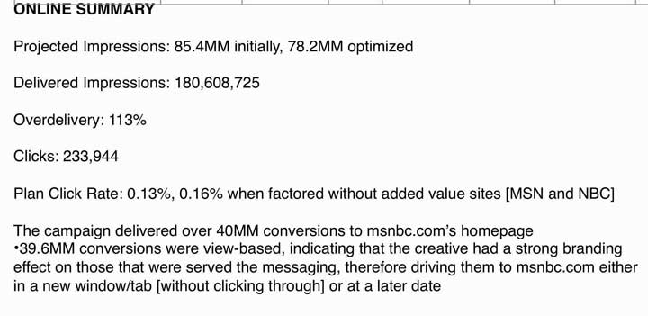Summary of results from the msnbc.com online banner campaign including paid and in-kind media from NBC and MSN.
Figure 14.17
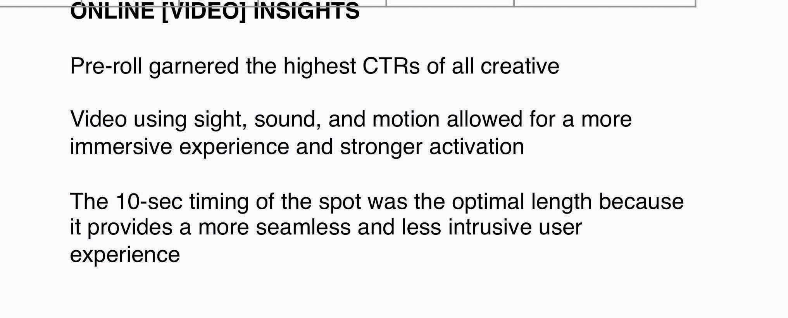msnbc.com ran ten-second prerolls “Spectrum Rain” and “Spectrum Wall” and garnered the highest click-through rate of the campaign.
Figure 14.18
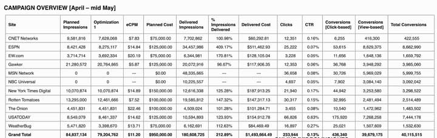In order to optimize online dollars, it was important for msnbc.com, The Media Kitchen, and SS+K to pay attention to each site and each unit that was being utilized.
Public relations campaigns traditionally measure impact in terms of the extent to which the client obtains media coverage. A basic metric is media impressionsAn estimate of the number of people who see an ad in a magazine, a newspaper, or on a talk show or who hear about it in a radio interview.; as you learned in earlier chapters, this is an estimate of the number of people who see the plug in a magazine or newspaper or on a talk show or who hear about it in a radio interview. A PR firm typically delivers a comprehensive list of media citations to the client, and it may rank these in terms of the prestige or circulation of the outlet or how prominent the mention was in this outlet. Again, this metric doesn’t really speak to any impact the citations have on actual purchases or attitude change.Deborah Holloway, “How to Select a Measurement System That’s Right for You,” Public Relations Quarterly (Fall 1992): 15–17.
As WOM (word-of-mouth) assumes a greater role in many advertisers’ strategies—especially online buzz—the pressure is on for agencies to demonstrate that this approach does more than just make people talk about a brand. In fact, one prominent WOM agency called BzzAgent recently took a bold step to back up its claims that its buzz campaigns yield attractive ROI. With its “WOM Impact Guarantee” program the agency invites any brand marketer and its agency partners to take part in a challenge in which BzzAgent and the agency partner will run competing campaigns. If BzzAgent does not top the competing agency by 20 percent across four metrics—brand awareness, consumer opinion, purchase intent, and actual sales—the agency will refund the marketer the cost of its word-of-mouth campaign and measurement costs.Michael Bush, “Better ROI or Your Money Back, Says Buzz Agency,” Advertising Age, July 14, 2008, http://adage.com/article?article_id=129593 (accessed July 16, 2008). That’s putting your money where your (word-of-) mouth is.
The explosion of blogs, chat rooms, and Web sites that let consumers spread the word about products they love and hate opens an entire new realm of possibilities to develop metrics for WOM. Contrary to the assumptions of many students who brazenly post embarrassing photos of themselves on Facebook, the Web is forever—most content that goes online can be traced and analyzed long after it’s been put there. That photo of you from last weekend’s wild party might come back to haunt you someday!
BuzzMetrics, a subsidiary of the Nielsen Company, offers marketers research services to help them understand how this consumer-generated content affects their brands. BuzzMetrics’ search engines identify online word-of-mouth commentary and conversations to closely examine phrases, opinions, keywords, sentences, and images people use when they talk about a client’s products. The company’s processing programs then analyze vocabulary, language patterns, and phrasing to determine whether the comments are positive or negative and whether the authors are men, women, young, or old to more accurately measure buzz. BuzzMetrics’ BrandPulse and BrandPulse Insight reports can tell advertisers how many people are talking about their products online, the issues they’re discussing, and how people react to specific ads or other promotional activities.Keith Schneider, “Brands for the Chattering Masses,” New York Times Online, December 17, 2006, http://www.nytimes.com/2006/12/17/business/yourmoney/17buzz.html?scp=4&sq=buzzmetrics&st=nyt (accessed April 14 2008); Nielsen Buzzmetrics, http://www.nielsenbuzzmetrics.com/products (accessed April 14, 2008).
Figure 14.19
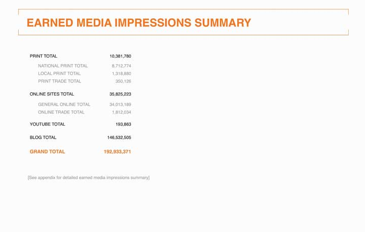Total earned media impressions from the msnbc.com PR campaign.
In addition to measuring elements of the campaign, msnbc.com took some internal measurements. Taking these additional steps allowed them to see how the messaging impressions were affecting the site traffic. Using Omniture tracking, msnbc.com was able to analyze the action on their site while the campaign was in effect and to determine whether they met their goals.
Figure 14.20
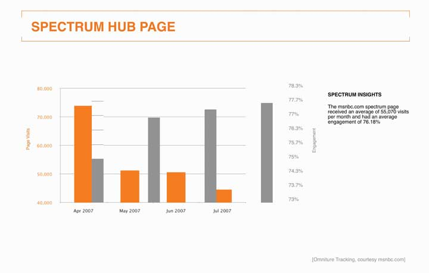This chart follows the traffic numbers and time spent interacting with http://www.spectrum.msnbc.com, which was a landing destination for the campaign. Having a unique URL or phone number is a common way for direct marketers and online advertisers to measure success.
Figure 14.21
This chart tracks overall visits to msnbc.com from January to July in 2006 and 2007. Notice the big gap in April, the month the campaign launched. Analyzing this data helped msnbc.com to quantify the success of its goal of increasing overall traffic from the previous year.
Figure 14.22

One of the key measurements of success was to increase unique users, the number of different people who come to a site. If the same person visits a site five times a day, she still counts as one unique user.
Figure 14.23
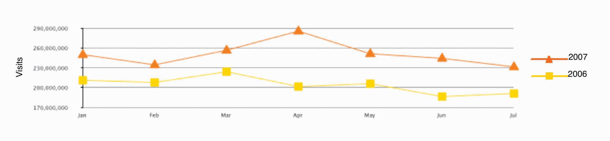Another breakdown of the traffic shows the number of organic usersA user who types in a given URL, or who has that URL bookmarked as the form of entry into a given site, rather than clicking through a link (from a search page or ad).. This is a user who types in a given URL, or who has that URL bookmarked as her form of entry into a given site, rather than clicking through a link (from a search page or ad).
Figure 14.24
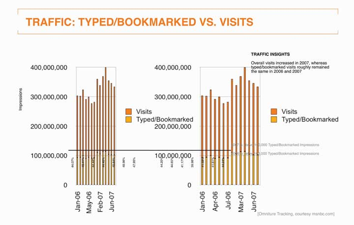SS+K compared the rate of overall visits versus the rate of visits by organic users.
Figure 14.25
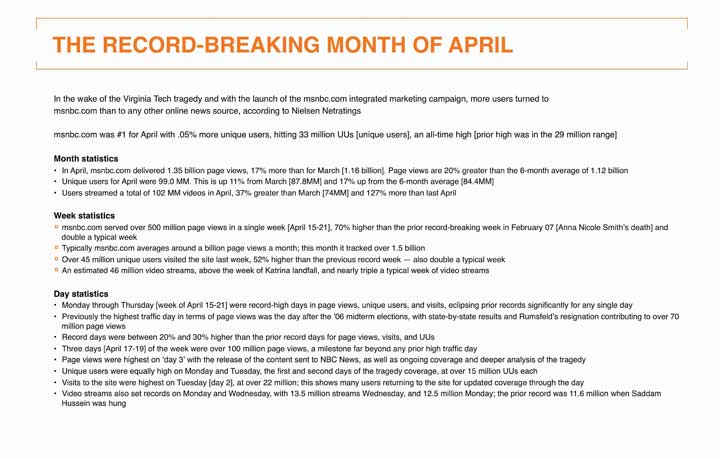The bottom line: the first-ever branding campaign for msnbc.com was a huge success! The slide above captures the key statistics in the launch month of April 2007.
Figure 14.26
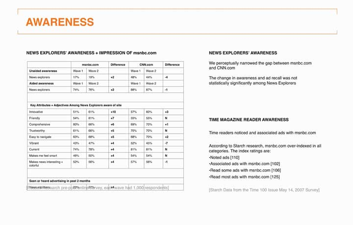In addition to tracking traffic data, it was also important to consider awareness as a metric to determine the success of the campaign. Prepost survey results included both qualitative and quantitative data.
A few months after the campaign wrapped, SS+K conducted a set of interviews with the same internal stakeholders they’d interviewed when they won the account. One of the goals of the marketing campaign was to unite their multiple views of what the brand stood for. It turned out that even before it launched, stakeholders felt the campaign was successful in that it gave msnbc.com a clear story. It gave them a common lens they could use to evaluate new design concepts and editorial content, while it gave msnbc.com the cachet stakeholders felt was long overdue. It successfully overcame the past ambiguity about whether the site was primarily an offshoot of NBC versus Microsoft and promised stakeholders a clearer future. The head of msnbc.com ad sales noted: “Clients have called us asking, ‘How do we do something similar?’ It’s opened up doors.”
Catherine Captain
(click to see video)Catherine Captain summarizes the campaign’s success from her point of view.
Table 14.1 Final Takeaway and Lessons from the msnbc.com Branding Campaign
|
A BRAND IS BORN “This is a good thing, we now have an independent identity.” —msnbc.com key stakeholder |
|
INTERNAL RALLYING CRY “It’s now visually clear that we are different and we’ve arrived somewhere special and unique, and it works because we brought it out ourselves, it’s who we are.” —msnbc.com key stakeholder |
|
STARTING TO GET THE WORD OUT Paid media impressions: Over 730 million Earned media impressions: Over 175 million |
|
LOW CONSUMER AWARENESS Statistically insignificant changes in awareness and ad recall among News Explorers |
|
HIGH CONSUMER ENGAGEMENT Large amount of time spent playing online game High recall of game sponsor in-cinema |
|
CLARIFIED IDENTITY HELPS DEVELOP AS NEWS SOURCE, NOT JUST A NEWS SITE “The key is, we have to keep at it, this can’t be a one shot deal, we have to get it out there more.” —msnbc.com key stakeholder |
|
KEEP EVOLVING THE PRODUCT “We know that CNN.com beat us to a redesign, and we know that we are behind them, we are working on getting our flexible design out there.” —msnbc.com key stakeholder |
Since the campaign, msnbc.com has been decorated with more than a dozen honors and accolades, including these awards. As you’ll note, these awards are in different categories from effectiveness to creativity. Visit each of their Web sites to learn more about the prestige of each of these awards.
Advertisers continue to search for new platforms as they compete for the attention of media-saturated consumers. Today virtually anything—from a cemetery to a rocket ship—can be used to get across a message. But these emerging venues don’t necessarily have a tradition (yet) of measuring direct impact. An exception is direct marketing; its lifeblood is about tying a message directly to a result. Whether via mail catalogs or online ads, direct marketers carefully track the effectiveness of each and every message they send. This sounds great, and it usually is—but remember, as we’ve already noted, short-term purchases may boost your bottom line this quarter but still come back to bite you in the long term if these messages don’t contribute to a more fundamental shaping of customers’ deep-seated feelings and beliefs about the product or service. And so, the search for the Holy Grail continues.